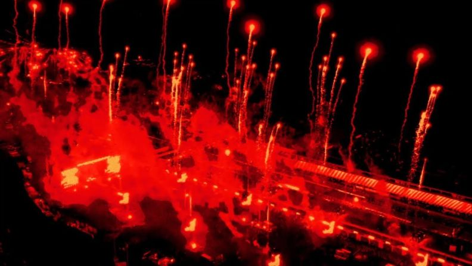
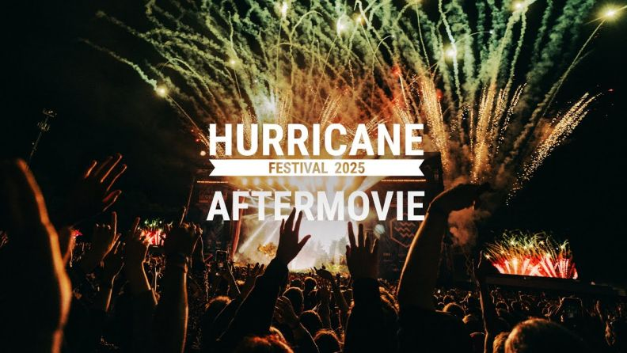
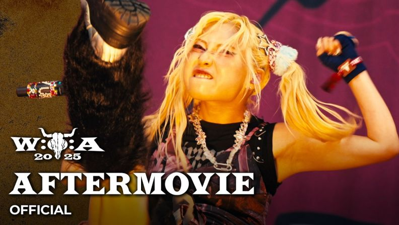
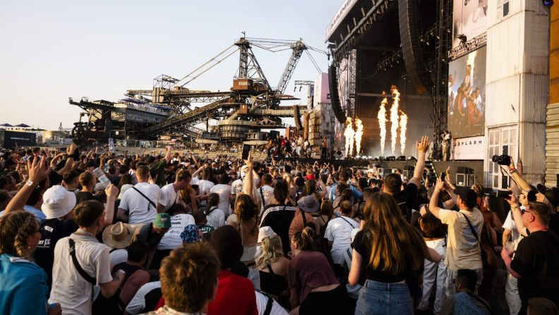

Rock am Ring/Rock im Park

Rock am Ring und Rock im Park sind Schwester-Events, die zeitgleich an zwei Standorten stattfinden – auf der Rennstrecke Nürburgring in der Eifel
und im Zeppelinfeld in Nürnberg. Hier erleben die Besucherinnen und Besucher ein gewaltiges Line-Up internationaler Größen:
Von den US-Amerikanern um Metallica über die brasilianischen Rockstars von Sepultura bis zum japanischen Metal-Phänomen Babymetal.
Jährlich kommen bei den Festivals etwa 150.000 Menschen aus aller Welt zusammen.
Hurricane/Southside Festival

Das Hurricane Festival in Norddeutschland und das Southside Festival in Süddeutschland laufen ebenfalls parallel.
Hier erwartet die Besucherinnen und Besucher das wohl vielfältigste Programm.
In diesen Festivals fühlen sich alle wohl, die bei der Frage nach dem Musikgeschmack „von allem ein bisschen“ angeben.
Indie, Pop, Rap und elektronische Musik bringen hier jährlich rund 130.000 Menschen zusammen.
Wacken Open Air

Auf dem Metal-Fest Wacken Open Air dominieren verzerrte Gitarren und brachiale Drums, die bei den einen zu Headbanging, bei den anderen zu Kopfschütteln führen.
Metalheads aus aller Welt treffen sich, um die kleine norddeutsche Gemeinde Wacken eine Woche lang in ein großes Rock-Paradies zu verwandeln.
Das Dorf mit 2.000 Einwohnerinnen und Einwohnern beherbergt während des Festivals rund 75.000 Metalfans.
Wacken Open Air gilt als größtes Heavy-Metal-Festival der Welt.
Splash! Festival

Deutschlands wohl lässigstes Festival findet in Gräfenhainichen in Sachsen-Anhalt statt.
Schauplatz ist die „Eisenstadt Ferropolis“, ein ehemaliger Tagebau, der zum Veranstaltungsort umfunktioniert wurde.
Um einen riesigen Schaufelbagger, auch „Big Wheel“ genannt, treten hier deutsche und internationale Rap-Stars auf.